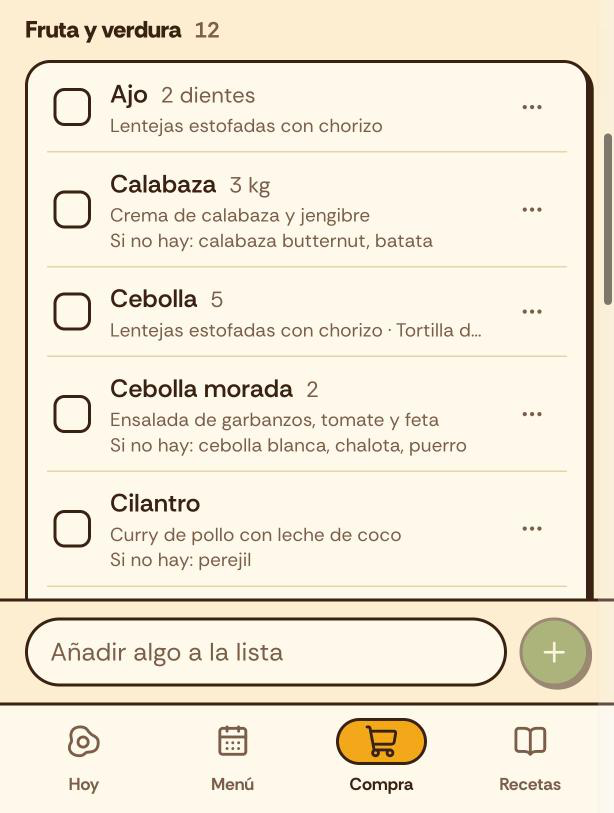

<title>Tabooki UI proposals</title>
<meta name="claude:viewport-fit-sides" content="cover">
<link rel="stylesheet" href="https://fonts.googleapis.com/css2?family=Rethink+Sans:wght@400;600;700;800&family=Shrikhand&display=swap">
<style>
  /* Layout: one column of proposals, newest first; each shows "Antes" and "Después" side by side, stacked on a phone. */
  :root {
    --bg: #fcefd2; /* mantequilla, the app's background */
    --card: #fff9ec;
    --fg: #3a2213;
    --muted: #7a5e4a;
    --brand: #d2531a;
    --primary: #5a7a1c;
    --yolk: #f3a81c;
    --wash: #fde4a8;
    --outline: #3a2213;
    --display: 'Shrikhand', Georgia, serif;
    --text: 'Rethink Sans', system-ui, -apple-system, 'Segoe UI', sans-serif;
  }
  @media (prefers-color-scheme: dark) {
    :root:not([data-theme="light"]) { --bg: #1f140c; --card: #2b1c12; --fg: #f6e7cc; --muted: #c3a88c; --brand: #f07a43; --primary: #a6c45a; --yolk: #f3a81c; --wash: #4a3412; --outline: #d8bf98; color-scheme: dark }
  }
  :root[data-theme="dark"] { --bg: #1f140c; --card: #2b1c12; --fg: #f6e7cc; --muted: #c3a88c; --brand: #f07a43; --primary: #a6c45a; --yolk: #f3a81c; --wash: #4a3412; --outline: #d8bf98; color-scheme: dark }

  body { background: var(--bg); color: var(--fg); font-family: var(--text); font-size: 16px; line-height: 1.5 }
  .page { max-width: 60rem; margin: 0 auto; padding-block: 1.5rem 3rem; padding-left: max(16px, env(safe-area-inset-left, 0px)); padding-right: max(16px, env(safe-area-inset-right, 0px)); display: flex; flex-direction: column; gap: 2rem }
  h1 { font-family: var(--display); font-weight: 400; color: var(--brand); font-size: 2.25rem; line-height: 1.1; margin: 0; text-wrap: balance }
  .lede { margin: .25rem 0 0; color: var(--muted); max-width: 40rem }

  .proposal { background: var(--card); border: 2px solid var(--outline); border-radius: 16px; box-shadow: 3px 3px 0 var(--outline); padding: 1.25rem; display: flex; flex-direction: column; gap: 1rem }
  .head { display: flex; flex-wrap: wrap; align-items: center; gap: .5rem .75rem }
  .num { font-weight: 800; color: var(--muted); letter-spacing: .04em; font-size: .8rem; text-transform: uppercase }
  .proposal h2 { margin: 0; font-size: 1.35rem; line-height: 1.2; font-weight: 800; text-wrap: balance; flex-basis: 100% }
  .status { display: inline-block; border: 2px solid var(--outline); border-radius: 999px; padding: 0 .6rem; font-size: .78rem; font-weight: 700 }
  .status.waiting { background: var(--yolk); color: #3a2213 }
  .status.done { background: var(--primary); color: var(--card) }

  .shots { display: grid; grid-template-columns: 1fr 1fr; gap: 1rem }
  @media (max-width: 560px) { .shots { grid-template-columns: 1fr } }
  figure { margin: 0; display: flex; flex-direction: column; gap: .4rem; min-width: 0 }
  figcaption { font-weight: 800; font-size: .8rem; letter-spacing: .06em; text-transform: uppercase; color: var(--muted) }
  figure.after figcaption { color: var(--primary) }
  figure img { display: block; width: 100%; max-width: 100%; height: auto; border: 2px solid var(--outline); border-radius: 12px; background: var(--bg) }

  .notes { display: grid; grid-template-columns: 1fr 1fr; gap: 1rem }
  @media (max-width: 560px) { .notes { grid-template-columns: 1fr } }
  .notes div { min-width: 0 }
  .notes h3 { margin: 0 0 .25rem; font-size: .95rem; font-weight: 800 }
  .notes p { margin: 0; max-width: 65ch }
  .notes ul { margin: 0; padding-left: 1.1rem }
  .history h2 { font-size: 1.1rem; font-weight: 800; margin: 0 0 .75rem }
  details.proposal > summary { cursor: pointer; list-style: none; display: flex; flex-wrap: wrap; align-items: center; gap: .5rem .75rem }
  details.proposal > summary::-webkit-details-marker { display: none }
  details.proposal > summary h2 { flex-basis: auto; font-size: 1.1rem }
  details.proposal[open] > summary { margin-bottom: 1rem }
  :focus-visible { outline: 3px solid var(--primary); outline-offset: 2px }
</style>

<main class="page">
  <header>
    <h1>Tabooki UI proposals</h1>
    <p class="lede">One change at a time: how the screen looks now, how it would look, and why. Nothing is built until it's accepted. The screens are the real app at phone width, on a test household.</p>
  </header>

  <!-- Current proposal first, as an <article> with a "Waiting for your OK" status. When it's accepted, move it to "Done" below as a <details>. -->
  <p class="lede">Nothing waiting right now.</p>

  <section class="history" aria-labelledby="done-title">
    <h2 id="done-title">Done</h2>
    <details class="proposal" id="p3">
      <summary><span class="num">#3 · Menú, Compra</span><span class="status done">Built</span><h2>Undo after "Fuera"</h2></summary>
      <div class="shots">
        <figure><figcaption>Antes</figcaption></figure>
        <figure class="after"><figcaption>Después</figcaption></figure>
      </div>
      <div class="notes">
        <div>
          <h3>Why it's better</h3>
          <p>One tap on "Fuera" deleted the meal with no way back. Now a few seconds to undo a slip, and confirmation that it happened.</p>
        </div>
        <div>
          <h3>What it costs</h3>
          <p>Also on typed items in Compra. Leftovers links don't come back on undo (backend).</p>
        </div>
      </div>
    </details>
    <details class="proposal" id="p2">
      <summary><span class="num">#2 · Menú</span><span class="status done">Built</span><h2>Say what the ⚠ means on the meal row</h2></summary>
      <div class="shots">
        <figure><figcaption>Antes</figcaption></figure>
        <figure class="after"><figcaption>Después</figcaption></figure>
      </div>
      <div class="notes">
        <div>
          <h3>Why it's better</h3>
          <p>The triangle says something's off, not what. A two-word label says it at a glance, with no taps and no taller rows.</p>
        </div>
        <div>
          <h3>What it costs</h3>
          <p>The full sentence stays in the meal sheet.</p>
        </div>
      </div>
    </details>
    <details class="proposal" id="p1">
      <summary><span class="num">#1 · Compra</span><span class="status done">Built</span><h2>One line per item</h2></summary>
      <div class="shots">
        <figure><figcaption>Antes</figcaption></figure>
        <figure class="after"><figcaption>Después</figcaption></figure>
      </div>
      <div class="notes">
        <div>
          <h3>Why it's better</h3>
          <p>In the shop you look for the item name and tick it. One line per item fits 7 items where 5 fit before, so a week's list needs noticeably less scrolling.</p>
        </div>
        <div>
          <h3>What it costs</h3>
          <p>The recipes and the "Si no hay" substitutes are one tap away, at the top of the "…" panel.</p>
        </div>
      </div>
    </details>
  </section>
</main>
